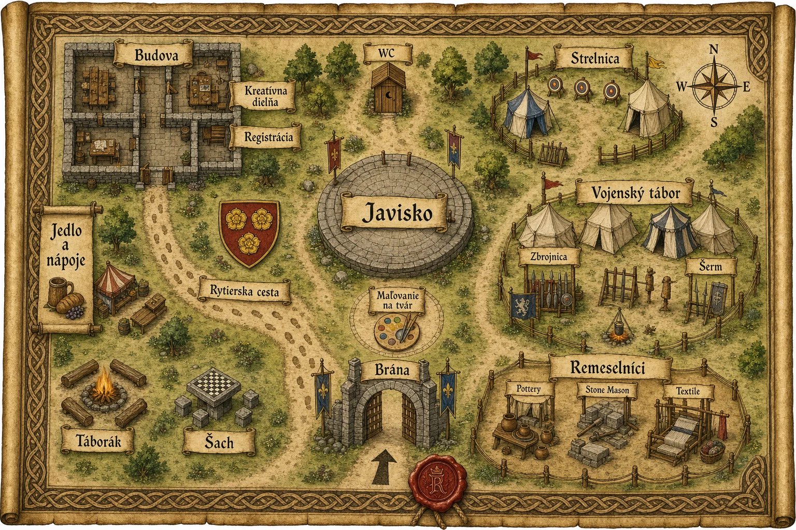

Podpora združenia
Dar na festival
Výšku príspevku si určíte sami podľa možností.
Prispieť na festivalPod vlekom · Stropkov
Lukostrelecký turnaj, šachový turnaj, rytierska cesta, pasovanie rytierov, interaktívna rozprávka, tombola a táborová opekačka — rekreačné stredisko Pod vlekom.
Festival už tretí rok organizuje občianske združenie Sparta v spolupráci s mestom Stropkov a nadväzuje na dlhoročnú tradíciu stropkovských hradných slávností.
Nový formát je postavený na legende o rytierovi Andreasovi – skutočnej historickej postave, ktorú oživil miestny spisovateľ Miroslav Majerník.
Festival sa koná v malebnom prostredí Pod vlekom, ktoré ponúka priestor pre deti, rodiny aj všetkých milovníkov histórie, dobrého jedla, kávy, kultúry, umenia a zábavy.
Podporte podujatie dobrovoľným darom online. Niektoré aktivity majú limitovaný počet miest, rezervujte si ich včas.
Festival organizuje občianske združenie Sparta.
Podpora združenia
Výšku príspevku si určíte sami podľa možností.
Prispieť na festivalPrihlásenie na činnosti
Vyberte si konkrétnu činnosť a odošlite prihlášku. Všetky registrácie sú na jednej stránke prihlášok.
V deň festivalu (16. augusta 2026) sa tu zobrazí, čo práve prebieha a čo môžete robiť.
| Čas | Program |
|---|
Podrobné umiestnenie zón nájdete na mape areálu nižšie.
Všetky zóny festivalu nájdete priamo na mape — brána, registrácia, kreatívna dielňa, javisko, rytierska cesta, šach, táborák, jedlo a nápoje, strelnica, vojenský tábor, zbrojnica, šerm, remeselníci a ďalšie.

Festival sa koná v rekreačnom areáli Pod vlekom v Stropkove.
Pod vlekom 1734, 091 01 Stropkov
Krátky prístup autom aj pešo, parkovanie je pri areáli.
Odpovede na najčastejšie otázky návštevníkov festivalu.
Festival sa koná v areáli Pod vlekom (Pod vlekom 1734, Stropkov). Parkovanie je priamo pri areáli. Z centra mesta je to cca 10 minút pešo.
Strava a stánky na mieste fungujú na žetóny, ktoré si zakúpite pri pokladnici. Online môžete prispieť dobrovoľným darom na podporu akcie združenia.
Áno, za podmienky, že budú na vôdzke a pod dohľadom majiteľa. Prosíme o ohľaduplnosť voči ostatným návštevníkom a upratanie po zvierati.
Počasie odporúčame sledovať cez SHMÚ alebo yr.no. Zbaľte si oblečenie do vetra a dažďa. V prípade nepriaznivého počasia môže organizátor upraviť program.
Areál je prevažne na rovnom teréne a prístupný pre kočíky. Trasy vhodné pre vozíčkarov budú označené na mieste.